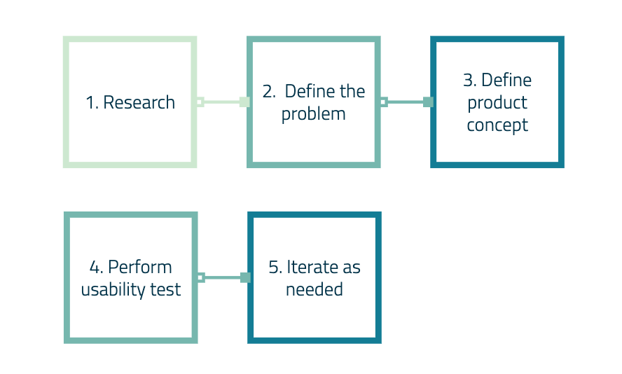
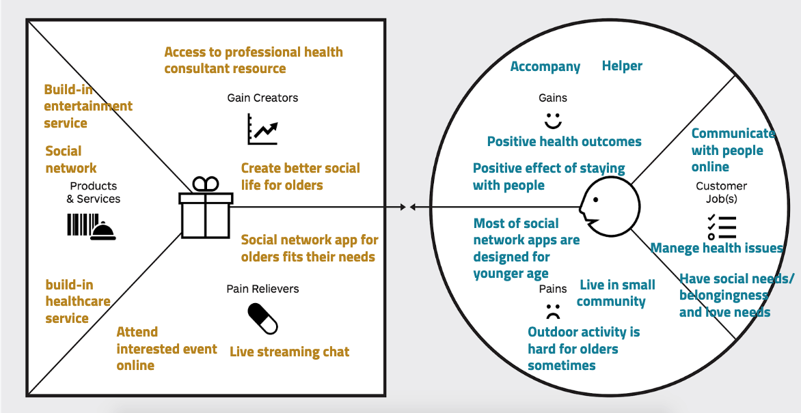
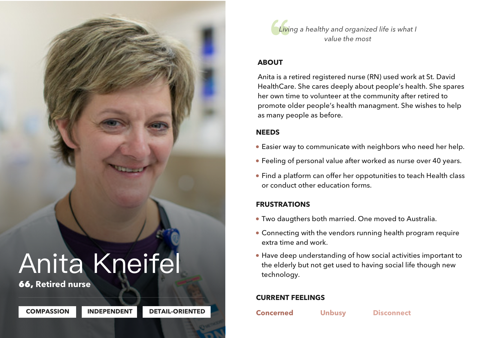
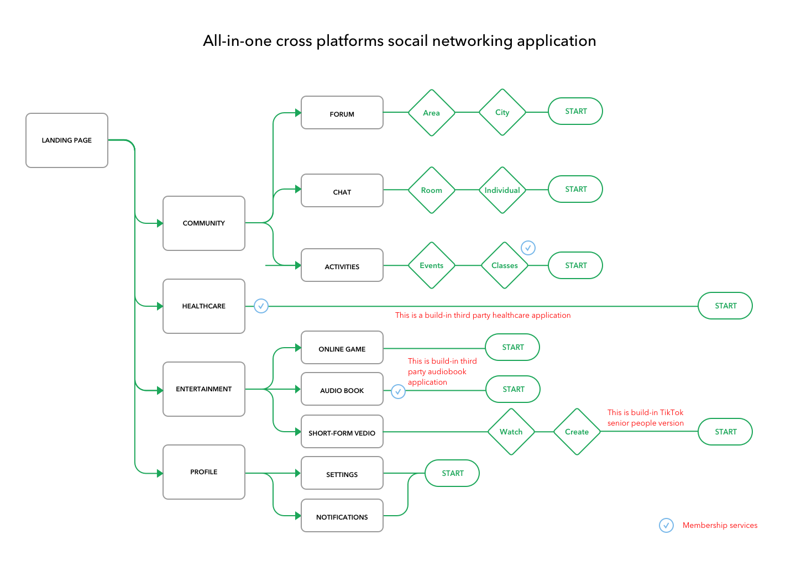
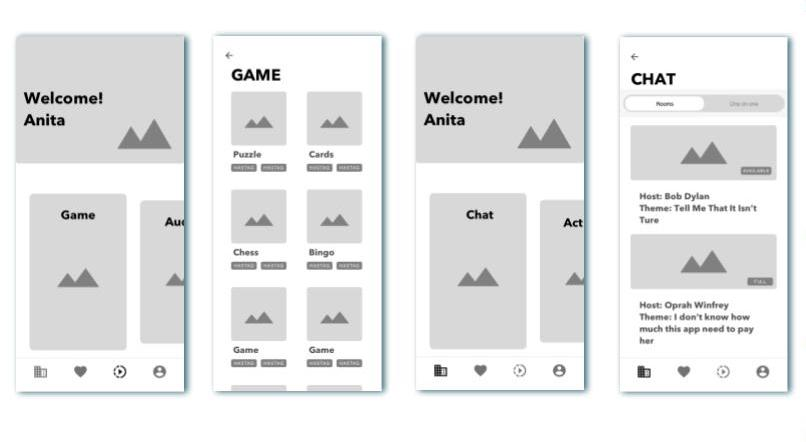
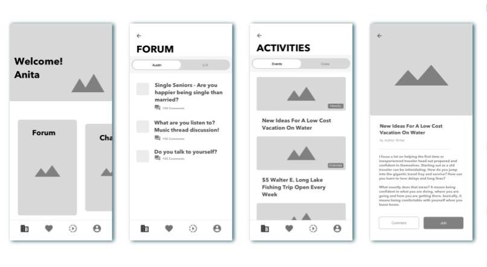
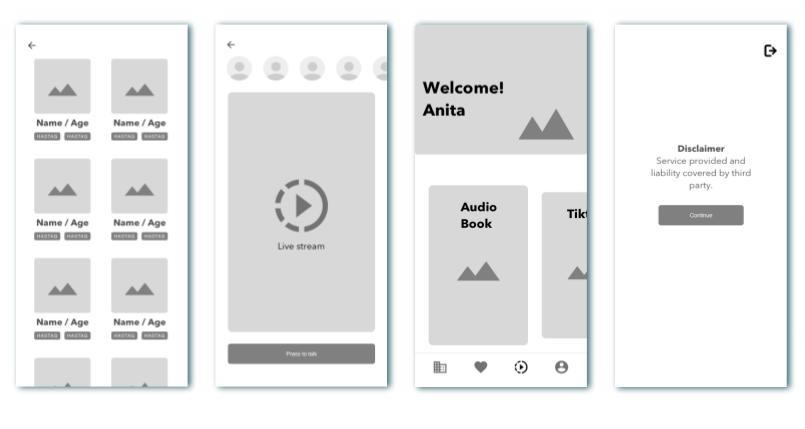
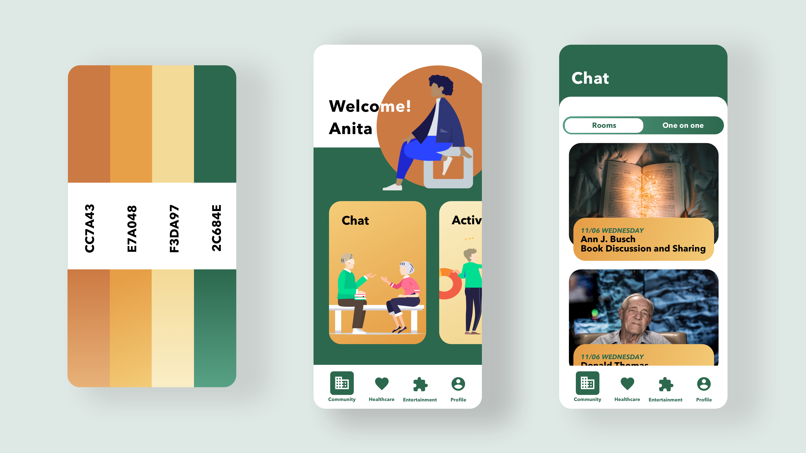

UX/UI Case study: Social Networking Application for Older Adults
Overview
According to the On average, older adults spend over half their waking hours alone, published on Pew Research Center, Americans ages 60 and older are alone for more than half of their daily measured time. All told, this amounts to about seven hours a day, and among those who live by themselves, alone time rises to over 10 hours a day.
While time spent alone is not necessarily associated with adverse effects, it can be used as a measure of social isolation, which in turn is linked with negative health outcomes among older adults. Social isolation can have direct effects on:
- Cardiovascular disease risk factors.
- Increased sympathetic nervous system activity.
- Increased inflammation, and decreased sleep.
- Accelerate brain and cardiovascular aging.
From the other report, American 60 and older are spending more time in front of their screens than a decade ago, I find out some interesting facts as below:
- 60 and older spend more than half of their daily leisure time in front of screens, mostly watching TV or videos.
- Ages 65 and older internet users now are 73%.
- 53% of people 65 and older are smartphone owners.
Seniors love technology too! I have decided to tackle this issue.
Problem definition
By synthesizing data from two reports, from these researches, I have kept in mind a couple of pain points as a short conclusion:
- 60 and older spend more than half of their daily leisure time in front of screens, mostly watching TV or videos.
- Ages 65 and older internet users now are 73%.
- 53% of people 65 and older are smartphone owners.
"Older adults in social isolation could lead to negative health outcomes. However, the most current social networking apps don't fit their needs perfectly."
As people age, certain physiological and cognitive changes are almost inevitable. To create a social networking product for older adults, those changes need to be compensated for.
Design process
Value proposition
A value proposition can briefly state the reason my target users will want to buy and use my product or feature, so this is a good place to start defining my concept. It is best measured by comparing a product's benefits to its costs. If a product lacks value, nothing else in the design process matters, because users have choices that aren't going to care.
Persona
User scenario
After Anita retired as a RN last year, she tried to use her medical knowledge helping with the community, which can also let her maintain a great social life. She accessed facebook, twitter, and community website to look for opportunities, but the information on those platforms are overwhelmed that her post wasn't noticed much.
Once she talked to a community volunteer, who helped Anita installed Sentopia, a social app for seniors. Soon she found her community forum then join the chat. She figured out if there are only seniors in the community active on the app, it will be way easier to make herself known by others. The information spread quickly, directly as the group size is shrunk.
She answered Bob's post about hiring a health care worker and offer him her resource. She found there are so many things she can do and even register to be an online health management consultant in the app.
Task flow
The cognitive decline that happens with age for most older adults, which will slow down the speed at precess information. Therefore, minimized task steps are a priority. As a designer, I need to consider it in the design process and adopt the corresponding solution.
For example, a Progressive disclosure UI pattern could help older adults easier to interpret. Clearly progress feedback could help solve memory problems. It is also helpful if the current task needs to store the previous task, avoiding switch into multiple screens. Labeled even familiar icons or features to make products more friendly to older adults.
Companion is important to older adults, but I want to consider other social needs beside it. China's #1 social networking WeChat has benefitted from very strong network effects - both direct and indirect. WeChat was smart to open up the platform to third-party developers, as they started offering their services on one platform, and more users started using them, then more and more third-party developer wants to offer services on WeChat. With the third-party effects, a social networking platform emerged as an ecosystem to rules all services.
I initially added Healthcare, Audiobook, Short-form video and Online class as third-party services on my product. To offer the seniors more social activities that can be performed online - build a lived cyber community, let users always stay connected.
Wireframe
Interaction is fundamental to the user experience. For older adults, particularly, it needs to be clear, easy to understand, and easy to interact with.
The gesture is an area where seniors can sometimes stumble, especially to those who new to touchscreen technology. I use Carousels UI pattern to build navigation within the main navigation tap bar, to allow browse gestures simple to perform. Simple horizontal, vertical, or diagonal movement all-natural motions. Voice message input avoids frustrating to who has difficulty typing, particularly on a mobile device.
  Prototype
Hi-fi Mockups
Vision loss is the most common disability reported in adults in the United States, with an estimated one in six people over the age of 70 reporting vision impairment. It's vital that consider visual accessibility in this app.
TMany older adults use reading glasses or opt for much larger font sizes. Blue color can also appear faded to seniors, have a faded visual contrast. Overall, color contrast should be improved in the design that caters to older adults.
Text and button sizes should be kept large. Basically, anything meant to be read or clicked should be scaled up. Fonts should be a minimum of 16px
Icons are another area of special concern. Icons should be labeled with text whenever possible. Those who don't need the helpful text aren't likely to be offended by it, but those who need it might get lost if it's not included.
